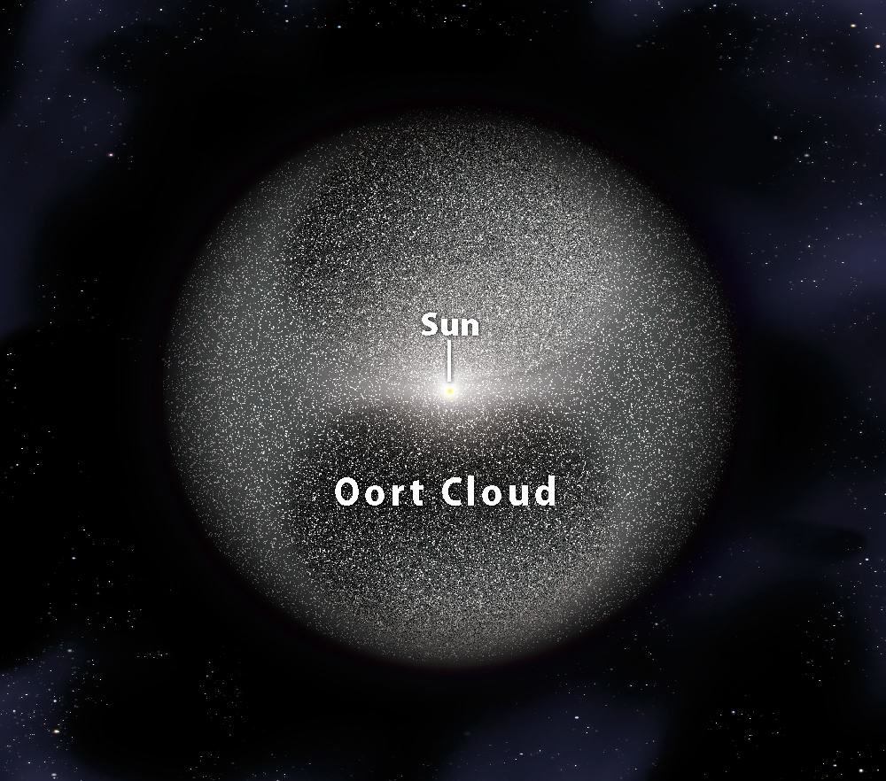

За Облака на Оорт се предполага, че има форма на сфера, съдържаща комети и обгръщаща Слънцето. Най-вътрешната част от облака на Оорт е разположена в равнината на еклиптиката близко до пояса на Кайпер. Въпреки че все още няма директни наблюдения, за него се предполага, че е източник на почти всички комети навлизащи във вътрешността на Слънчевата система. За някои късопериодични комети се смята, че произхождат от пояса на Кайпер.
През 1932 г. естонският астроном Ернст Йопик прави предположение, че всички комети във вътрешността на Слънчевата система произхождат от облак, разположен по периферията ѝ. През 1950 г. идеята получава одобрението на нидерландския астроном Ян Оорт като обясняваща факта, че повечето комети биват унищожавани само след няколко орбити през вътрешността на Слънчевата система и биха били отдавна изчезнали, ако винаги са били в такива орбити. Според теорията, облакът на Оорт съдържа милиони кометни ядра, които са стабилни поради факта, че се намират на значително разстояние от Слънцето и слънчевото лъчение, което получават, е изключително слабо. Нови комети биват постоянно отклонявани на орбити, преминаващи през вътрешността на Слънчевата система.
Още информация за Облака на Оорт
Облака на Оорт